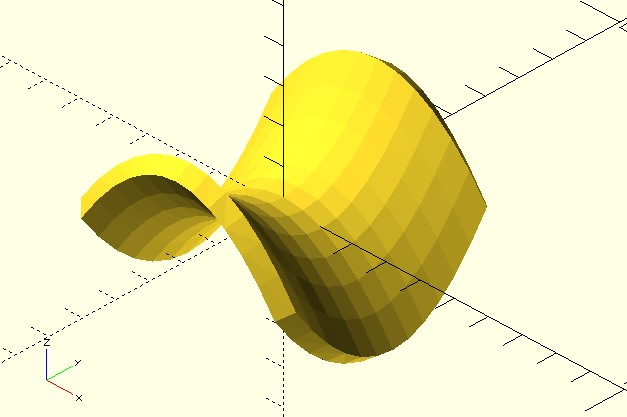
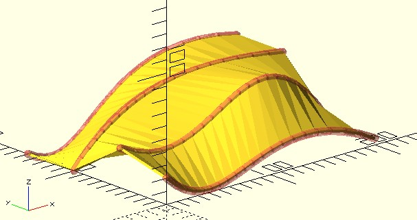
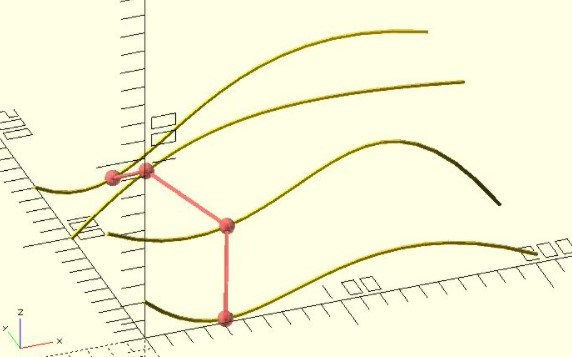
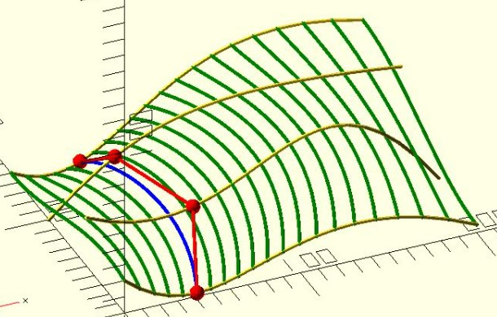
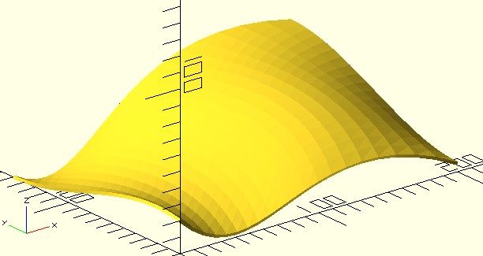
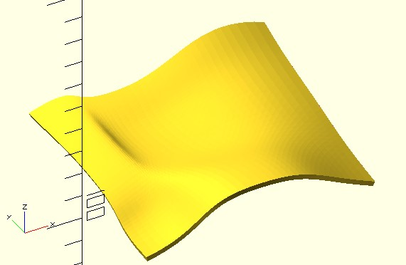
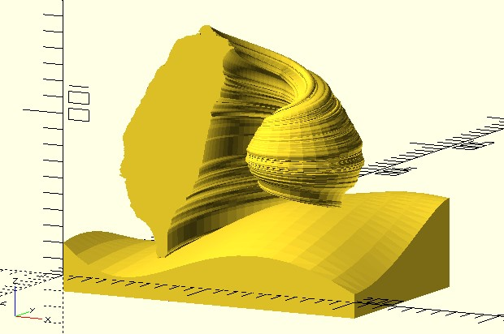
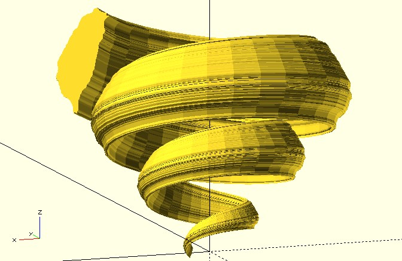

從曲線到曲面
March 9, 2022在〈polygon 與 polyhedron〉談過，怎麼實作函式圖形的繪製，dotSCAD 提供了 sf_thicken，可以給定曲面的座標點與厚度來繪製曲面模型：
use <surface/sf_thicken.scad>
function f(x, y) = (y ^ 2) / 4 - (x ^ 2) / 4;
min_value = -3;
max_value = 3;
resolution = 0.5;
thickness = 0.5;
points = [
for(y = [min_value:resolution:max_value])
[
for(x = [min_value:resolution:max_value])
[x, y, f(x, y)]
]
];
sf_thicken(points, thickness);
這會建立以下的結果：

既然可以透過貝茲曲線、Catmull-Rom 樣條 等，以控制點的方式來建立曲線，而不用特別找出曲線的數學函式，那麼能不能有提供控制點，就能建立曲面的方式呢？
談談貝茲曲面
首先你可能會想到，利用多條貝茲曲線，是不是能構成曲面呢？例如，使用四條貝茲曲線：
use <surface/sf_thicken.scad>
use <bezier_curve.scad>
use <polyline_join.scad>
ctrl_pts = [
[[0, 0, 20], [60, 0, -35], [90, 0, 60], [200, 0, 5]],
[[0, 50, 30], [100, 60, -25], [120, 50, 120], [200, 50, 5]],
[[0, 100, 0], [60, 120, 35], [90, 100, 60], [200, 100, 45]],
[[0, 150, 0], [60, 150, -35], [90, 180, 60], [200, 150, 45]]
];
thickness = 2;
t_step = 0.05;
points = [for(i = [0:len(ctrl_pts) - 1])
bezier_curve(t_step, ctrl_pts[i])
];
sf_thicken(points, thickness);
// 顯示四條貝茲曲線
#for(curve = points) {
polyline_join(curve)
sphere(3);
}
可惜的是，雖然貝茲曲線本身看來是沒問題，然而面看來不平滑，具體而言，在列（row）看來平滑，在行（column）方向看來卻像是折線…

在行方向仍不平滑，如果在四條貝茲曲線上各取一個控制點：

用四個控制點來產生行方向的曲線，是不是就可以平滑了呢？

使用 sf_splines 函式
dotSCAD 提供了 sf_splines，可以指定列與行方向的曲線函式，如果只指定一個曲線函式，那麼列與行會使用同一個曲線函式。
你指定的控制點，會逐列呼叫列曲線函式得到各列曲線的點，接著各列上取點作為行控制點，呼叫行曲線函式，從而得到曲面。例如，若要建立貝茲曲面：
use <surface/sf_thicken.scad>
use <surface/sf_splines.scad>
use <bezier_curve.scad>
ctrl_pts = [
[[0, 0, 20], [60, 0, -35], [90, 0, 60], [200, 0, 5]],
[[0, 50, 30], [100, 60, -25], [120, 50, 120], [200, 50, 5]],
[[0, 100, 0], [60, 120, 35], [90, 100, 60], [200, 100, 45]],
[[0, 150, 0], [60, 150, -35], [90, 180, 60], [200, 150, 45]]
];
thickness = 2;
t_step = 0.05;
bezier = function(points) bezier_curve(t_step, points);
points = sf_splines(ctrl_pts, bezier);
sf_thicken(points, thickness);
這會建立以下的模型：

你想要 curve 作為曲線函式也是可以的：
use <surface/sf_thicken.scad>
use <surface/sf_splines.scad>
use <curve.scad>
ctrl_pts = [
[[0, 0, 20], [60, 0, 35], [90, 0, 40], [150, 0, 35], [200, 0, 10]],
[[0, 50, 30], [60, 60, 25], [100, 50, 50], [150, 50, 35], [200, 50, 10]],
[[0, 100, 0], [60, 100, 35], [90, 100, 40], [150, 100, 45], [200, 100, 10]],
[[0, 150, 0], [60, 150, 35], [90, 135, 45], [150, 135, 55], [200, 120, 10]],
[[0, 155, 0], [60, 155, 35], [90, 155, 50], [150, 155, 65], [200, 155, 10]]
];
thickness = 2;
t_step = 0.05;
points = sf_splines(ctrl_pts, function(points) curve(t_step, points));
sf_thicken(points, thickness);
這會建立以下的曲面：

關於 Golden Taiwan
在〈Golden Taiwan〉這個作品，海浪的部份，就是貝茲曲面：

dotSCAD 有一些 _extrude 模組，可以指定形狀的座標資訊來實現擠出，黃金螺旋的臺灣，是基於 golden_spiral_extrude 模組與 shape_taiwan 產生：
use <shape_taiwan.scad>
use <golden_spiral_extrude.scad>
mirror_taiwan = [for(pt = shape_taiwan(15)) [pt.x * -1, pt.y]];
golden_spiral_extrude(
mirror_taiwan,
from = 1,
to = 10,
point_distance = 2.5,
scale = 10
);
在這段程式碼中，要將 x 座標過來是因為螺旋擠出時是由內而外，內部的臺灣是反的，螺旋擠出後才會是正，類似地，來個盤旋而上的臺灣吧！
use <shape_taiwan.scad>
use <helix_extrude.scad>
r1 = 15;
r2 = 100;
levels = 3;
level_dist = 50;
helix_extrude(shape_taiwan(80),
radius = [r1, r2],
levels = levels,
level_dist = level_dist,
vt_dir = "SPI_DOWN",
rt_dir = "CLK",
scale = 0.1
);
